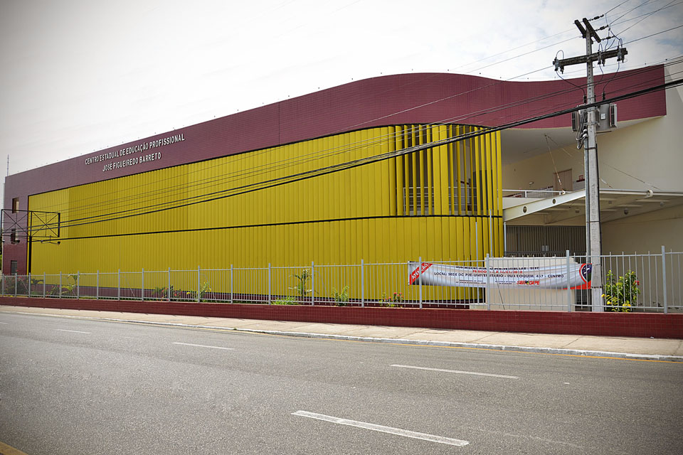

Quem Somos

Somos alunos do curso Técnico em Redes de Computadores do Centro Estadual de Educação Profissional José Figueiredo Barreto, localizado na rua Laranjeiras 1919, bairro Getúlio Vargas, Aracaju-SE.
Nossa turma teve início no segundo semestre de 2023 e entre as disciplinas estava a de Projeto de Aprendizagem Interdisciplinar I, a qual seria similar a um TCC. Como desafio, precisaríamos propor um projeto que seria desenvolvido durante todo o curso para que no final, tivéssemos algo relevante para a instituição e ou comunidade.
Assim surgiu o projeto Informática na Mão.